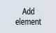
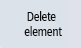

Introduction
You can define the individual contour elements that make up the contour.
The following contour elements are available for defining a contour:
A new contour refers to the zero point of the plane on which the contour is created.
Procedure
| | 1. | Press the "New contour" softkey. The input window for the starting point of the contour appears. |
| | |
| | 2. | Define the starting point of the contour by selecting the required point in the 3D model. The starting point is highlighted in the 3D model. |
| | 3. | Activate field "Start direction" and at the 3D model, select an element that can be connected with the starting point. Generally, starting point and elements can be connected if, for a top view of the plane, it appears that they are connected. A height difference does not play a role. All highlighted edges can be selected as element. |
 | 4. | Confirm the selection with "Accept". The contour is now automatically supplemented by additional matching elements to facilitate further input. |
| | 5. | If the identified contour does not fulfill your expectations, then you can select one of the elements at the model to then delete all subsequent elements. Press "Delete from here" to delete multiple contour elements. |
|  | 6. | It is then possible to specifically attach an additional subsequent element. Press on "Add element" to attach an additional subsequent element. |
|  | 7. | You can also delete individual elements to jump over individual points of the contour. Press on "Delete element" to jump over individual points of the contour. |
| | 8. | Press "Accept" to transfer the newly created feature to the program view. |
| Note |
To modify a contour subsequently, select the respective contour in the editing list and press the "Change contour" soft key. |